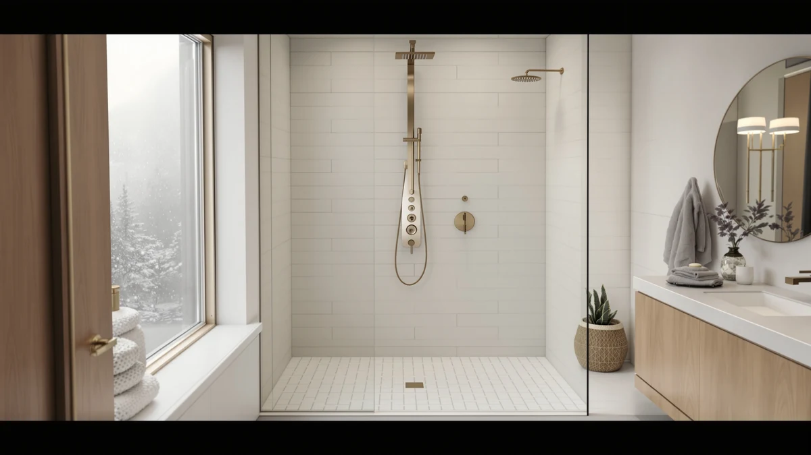

How to Clean Shower Floor: Complete Guide (2026)
Prices and picks verified as of September 2026. Independent, reader-supported reviews.


Things to Know Before You Buy
- Soap scum and mineral deposits build up fastest in showers with hard water above 7 grains per gallon, so cleaning a shower floor weekly instead of monthly keeps buildup from bonding to the grout.
- Baking soda and vinegar cut through soap scum without scratching acrylic, fiberglass, or ceramic tile, but vinegar left too long on natural stone etches the surface.
- Grout absorbs grime faster than the surrounding tile, so most of the visible discoloration on a shower floor actually lives in the grout lines, not the tile itself.
- A full clean, including a deep grout scrub, takes about 40 minutes and costs under $10 in supplies most households already stock.
- Sealing grout after a deep clean slows new staining by months, since unsealed grout soaks up soap and skin oil like a sponge.
Knowing how to clean shower floor surfaces properly is what keeps soap scum, grout grime, and hard water spots from turning a five-minute wipe-down into a weekend project. Hard water leaves calcium deposits inside grout pores and on tile surfaces, and those deposits build fastest in homes with well water or municipal water rated above 7 grains per gallon. Left alone, the buildup discolors grout permanently and turns a slick floor into one that feels gritty underfoot.
This guide walks through the same order most manufacturers and cleaning professionals recommend: rinse first, loosen grime with baking soda, then deep-clean the grout with vinegar before tackling any stains that remain. None of the five steps require power tools or harsh chemicals, and a full clean takes about 40 minutes once the baking soda paste has time to work. We researched manufacturer maintenance guides and cross-checked them against verified owner reviews to confirm which methods keep a shower floor clean long-term and which ones only look clean for a day.
What You'll Need
- Supplies: baking soda, white vinegar, and mild dish soap
- Tools: a stiff nylon-bristle brush and a squeegee with microfiber cloths
Step 1: Clear the Floor and Rinse Away Loose Debris
Start by clearing everything off the shower floor, including bath mats, razors, and shampoo bottles, so no surface stays protected from the cleaning solution later. Rinse the entire floor with hot water for a minute or two to soften surface-level soap scum and loosen any hair or grit sitting in the grout lines.
Run a squeegee or a dry microfiber cloth over the floor once to lift standing water and any debris the hot water knocked loose. This first pass matters because scrubbing a floor coated in loose grit works that grit into the grout instead of removing it, which is how faint scratch marks show up on acrylic and fiberglass pans.
Check the drain cover while the floor dries and pull out any visible hair clogs. A partially blocked drain leaves standing water on the floor after cleaning, and standing water is what leaves new mineral rings within hours.
Step 2: Apply a Baking Soda Paste to Soap Scum
Mix baking soda with a small amount of water until it forms a spreadable paste, roughly three parts baking soda to one part water. Spread the paste evenly over the tile, acrylic, or fiberglass surface, focusing on areas with visible white or gray soap scum buildup.
Let the paste sit for 10 to 15 minutes. The mild abrasion in baking soda breaks down the fatty acids in soap scum without scratching most shower floor materials, and the extra dwell time loosens grime that a quick wipe would miss.
Skip this step on natural stone floors like marble or travertine, since baking soda's abrasiveness can dull a polished stone finish over repeated use. A pH-neutral stone cleaner applied the same way works better on those surfaces.
Step 3: Deep-Clean the Grout Lines with Vinegar
Fill a spray bottle with undiluted white vinegar and saturate the grout lines directly, since grout absorbs and holds more grime than the surrounding tile. Let the vinegar sit for 10 minutes, or up to 20 minutes on grout that hasn't been cleaned in several months.
Scrub each grout line with a stiff nylon-bristle brush or an old toothbrush, working in short strokes along the line rather than across it. The acid in vinegar breaks down the mineral deposits and mildew that build up in grout, and the brush pulls the loosened grime out of the porous surface.
Rinse the vinegar off with warm water as you go, since letting it dry on the grout leaves a hazy residue that's harder to remove than the original grime.
Step 4: Scrub Away Hard Water Stains and Mineral Buildup
Reapply the baking soda paste to any hard water stains or mineral rings that remain after the vinegar treatment, since these calcium deposits often need a second round of scrubbing. Work the paste into the stain with a soft nylon brush in small circles, checking every minute or so to avoid over-scrubbing one spot.
For stains that resist both treatments, a commercial calcium, lime, and rust remover formulated for tile and grout clears deposits that plain baking soda can't touch. Test any commercial product on a hidden corner first, since some formulas discolor colored grout or damaged natural stone.
Pay extra attention to the area directly under the showerhead and around the drain, since these spots collect the heaviest mineral buildup and are the most likely to need a second pass.
Step 5: Rinse, Dry, and Seal the Grout
Rinse the entire shower floor thoroughly with warm water, making sure no baking soda residue or vinegar smell remains in the grout lines. Leftover residue attracts new grime faster than a bare surface does, so a thorough rinse matters as much as the scrubbing itself.
Dry the floor with a squeegee, then finish with a microfiber cloth to catch any water pooling in low spots or around the drain. A fully dry floor also makes it easier to spot grout that's cracked or missing, which lets water get underneath the tile.
Once the grout is completely dry, usually after 24 hours, apply a penetrating grout sealer with a small brush or applicator. Sealed grout resists new soap scum and stains for six months to a year, which cuts down how often the deep clean in this guide needs to happen.
Common Mistakes to Avoid
Using bleach as the first line of defense against grout mold is the most common mistake, and it often makes the problem worse over time. Bleach kills surface mold but doesn't penetrate porous grout deep enough to reach the roots, so mold returns within weeks while the bleach itself breaks down grout sealer and fades colored grout. Hydrogen peroxide or a dedicated grout cleaner reaches further into the grout without that damage.
Scrubbing with steel wool or an abrasive scouring pad is a close second. These leave fine scratches on acrylic and fiberglass shower floors that aren't visible when dry but trap dirt and turn hazy once the floor gets wet again. A stiff nylon brush handles everything a shower floor needs, including caked-on mineral deposits.
Skipping the vinegar soak and scrubbing dry grout right away is another shortcut that backfires. Dry grime bonds to the grout's porous surface, so scrubbing without loosening it first pushes dirt deeper into the pores instead of lifting it out.
Letting the floor air-dry after every shower, rather than only after a deep clean, is the mistake that brings people back to search how to clean a shower floor again a month later. Standing water evaporates and leaves mineral traces behind every time, so a 30-second squeegee pass after each shower does more to prevent buildup than any single deep clean.
Our Top Picks
If scrubbing turns up cracked tile, a pitted acrylic pan, or a floor that stays stained no matter how often you clean it, replacing the whole shower module is often less work long-term than chasing stains every week. These three shower panel towers pair a new floor with jets and a finish that's noticeably easier to keep clean than what most standard installs come with.

Editor's Pick
HSYLYPA 5-in-1 Shower Panel Tower
The tempered glass panel face and stainless steel jets wipe down in seconds and don't hold the soap scum that textured shower pans trap in their surface grain.
$135.99
Check Price on Amazon
Best Value
FUZ Contemporary Shower Panel Tower
A simpler jet layout means fewer tight corners to scrub during a weekly clean, at a price well below most stainless steel towers with the same rainfall head and body jets.
$174.99
Check Price on Amazon
Premium Choice
ROVOGO Shower Panel Tower System
The full stainless steel body resists the pitting and rust spotting that cheaper chrome-plated panels develop after repeated exposure to cleaning solutions like vinegar and baking soda.
$134.99
Check Price on AmazonFrequently Asked Questions
How often should you clean a shower floor?
Rinse and squeegee the floor after every shower, and do a full baking soda and vinegar clean once a week if you have hard water, or every two weeks with soft water. Floors with visible soap scum buildup or grout discoloration need attention sooner regardless of schedule.
Is vinegar safe on all shower floor materials?
White vinegar is safe on ceramic tile, porcelain, acrylic, and fiberglass shower floors, but it etches natural stone like marble, travertine, and limestone. Use a pH-neutral stone cleaner instead of vinegar if your shower floor is natural stone.
Can hydrogen peroxide replace bleach for grout mold?
Yes, a 3 percent hydrogen peroxide solution kills mold and mildew in grout lines without the fumes or fabric damage that bleach causes, though it works more slowly and may need a second application on heavy black mold stains.
Why does my shower floor still feel slippery after cleaning?
A slippery film after cleaning usually means soap residue wasn't fully rinsed, or a non-slip mat is trapping a layer of grime underneath it. Rinse with plain water for an extra minute after the vinegar and dish soap solution, and lift bath mats to scrub underneath them separately.
How do I remove hard water stains from a shower floor without scratching it?
Mix baking soda with enough water to form a paste, spread it over the stained area, and let it sit for 15 minutes before scrubbing with a soft nylon brush. Skip steel wool and abrasive powders, which scratch acrylic and fiberglass floors and make future staining worse.
Verdict
Cleaning a shower floor comes down to loosening grime before you scrub it, not scrubbing harder. Baking soda breaks down soap scum, vinegar dissolves the mineral deposits packed into grout lines, and a sealer keeps both from coming back as fast. Once you know how to clean shower floor surfaces in that order, from clearing debris through sealing the grout, a full deep clean takes about 40 minutes and needs to happen only once a week even in a hard water home.
If your floor keeps staining despite a consistent routine, or the pan itself is cracked, pitted, or beyond restoring, replacing the shower module addresses the root problem instead of masking it every weekend. The HSYLYPA 5-in-1 Shower Panel Tower pairs a new floor with a tempered glass and stainless steel finish that sheds soap scum faster than the setup you're replacing, so there's less scrubbing the next time this guide comes up. Whichever route you take, a weekly 30-minute clean keeps grout sealed, stains from setting in, and the floor looking new for years instead of months.